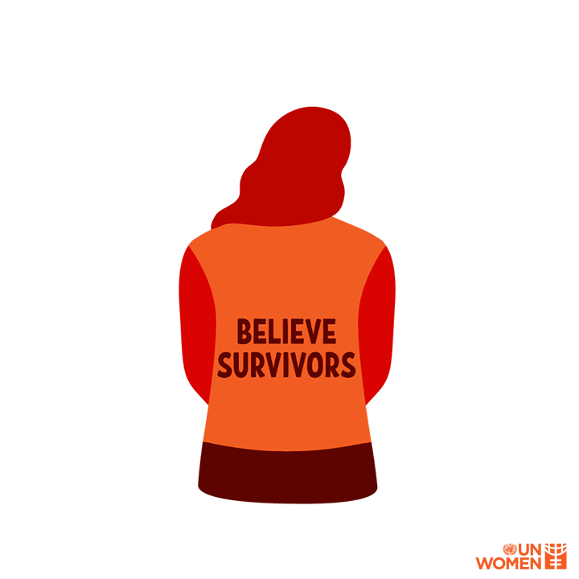
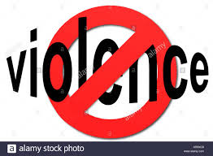
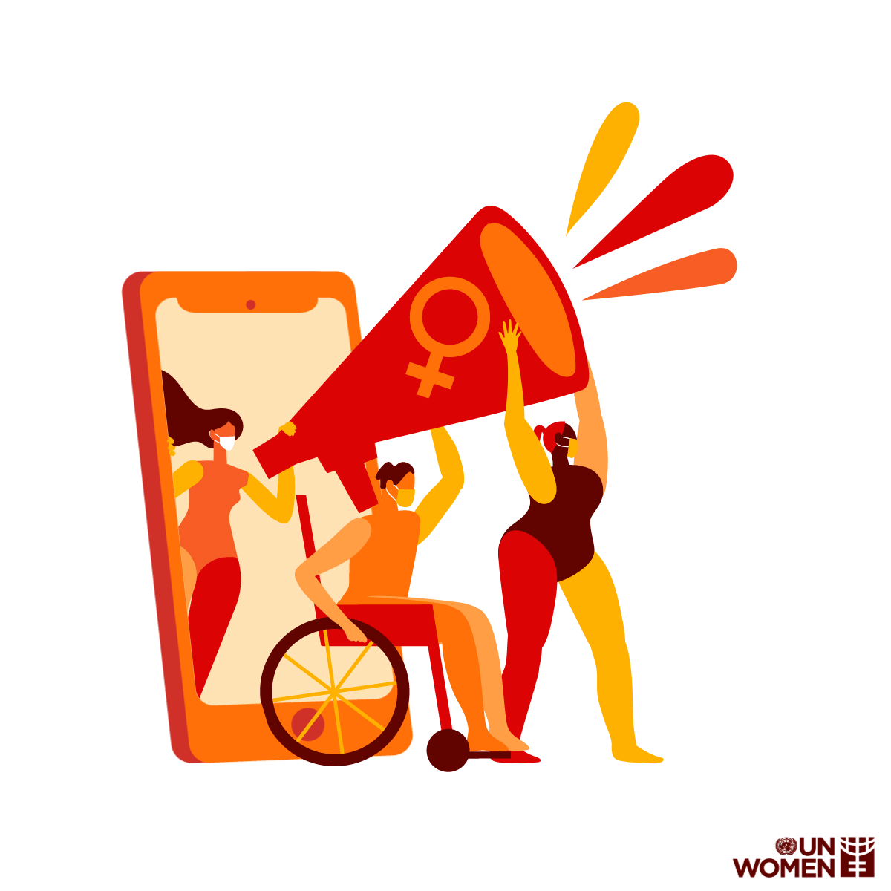

Esta es una pagina que se trata sobre algunas personas que tratan mal a su pareja madre y otras personas.
La bandera roja es una señal que te da una persona con tendencia abusivas.
Cuando una mujer comparte su historia de violencia, está dando el primer paso para romper el ciclo de maltrato. Debemos garantizarle el espacio seguro que necesita para hablar y ser escuchada. Conviene recordar que al tratar casos de violencia sexual, la sobriedad, la vestimenta y la sexualidad de la víctima son irrelevantes. El autor es el único responsable de la agresión y debe asumir la responsabilidad por sí solo. Protesta contra la culpabilización de la víctima y haz frente a la idea de que las mujeres deben evitar situaciones que se perciban como “peligrosas” según los estándares tradicionales. Las sobrevivientes están alzando la voz más que nunca, y todas y todos podemos hacer algo para asegurar que se les haga justicia.
¡No Violencia!
El ejemplo que damos a la generación más joven determina la manera en que esta piensa sobre el género, el respeto y los derechos humanos. Inicia conversaciones sobre los roles de género a una edad temprana y cuestiona los rasgos y las características tradicionales asignadas a hombres y mujeres. Señala los estereotipos a los que niñas y niños se enfrentan constantemente, ya sea en los medios de comunicación, en la calle o en la escuela, y hazles saber que no hay nada malo en ser diferente. Fomenta una cultura de aceptación. Habla sobre el consentimiento, la autonomía física y la rendición de cuentas a niñas y niños, y escucha también lo que tienen que contar sobre su experiencia en el mundo. Al dotar a jóvenes activistas con información y educarlos sobre los derechos de las mujeres, podemos construir un futuro mejor para todas y todos.
